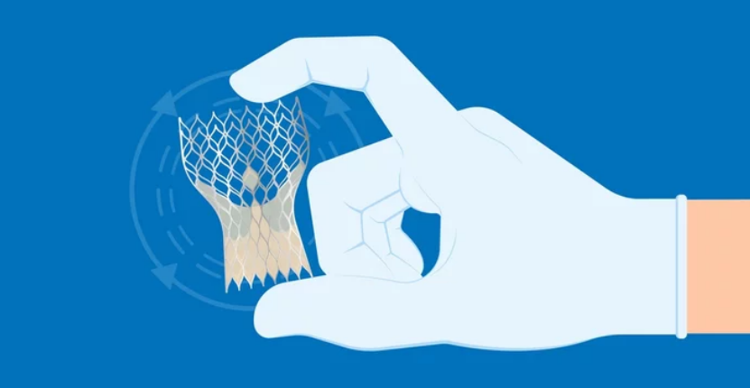

Valve Replacement Surgery is a sophisticated cardiac procedure aimed at restoring proper function to damaged or diseased heart valves. This surgical intervention involves the removal of a problematic heart valve and its replacement with either an artificial valve or a bioprosthesis. An artificial valve, typically made of durable materials like metal or synthetic polymers, mimics the natural function of a heart valve. It consists of leaflets or flaps that open and close in response to blood flow, allowing for efficient circulation. These artificial valves are highly durable and offer long-lasting support for patients with severe valve issues. On the other hand, a bioprosthesis is crafted from biological tissues, often derived from animal sources like pig or cow valves. These valves are specially treated and preserved to ensure compatibility within the human body. Bioprosthetic valves provide excellent hemodynamic performance and reduce the need for long-term anticoagulant medications, making them a preferred choice for certain patients.
The decision between an artificial or bioprosthetic valve is carefully weighed based on the patient's age, lifestyle, and overall health. Younger patients may opt for artificial valves due to their long lifespan, while older individuals or those with specific medical considerations may lean towards bioprosthetic options. Valve Replacement Surgery stands as a critical intervention for individuals suffering from severe valvular heart disease, aortic stenosis, or other conditions affecting the heart's valves. This procedure offers renewed hope and improved quality of life for patients, allowing them to regain normal heart function and resume their daily activities with vitality and vigor.
How is the Procedure Performed?
Valve Replacement Surgery is a complex cardiac procedure aimed at restoring optimal function to damaged or diseased heart valves. This surgical intervention entails the removal of a compromised heart valve and its substitution with either a mechanical valve or a biologically derived valve, typically sourced from cow, pig, or human heart tissue. Mechanical valves are made from durable materials and are designed to last a lifetime. They function effectively in regulating blood flow, but necessitate lifelong anticoagulant medication to prevent blood clots. Biological tissue valves, on the other hand, offer a more natural feel and do not require long-term anticoagulant use. However, they have a finite lifespan and may need replacement over time due to tissue degeneration. The choice between mechanical and biological valves depends on factors such as the patient's age, lifestyle, and overall health. Valve Replacement Surgery provides a crucial treatment option for individuals with severe valve conditions, enabling them to regain normal heart function and enjoy an improved quality of life.
Who is the Right Doctor for Valve Replacement?
For Valve Replacement, the appropriate specialist to consult is a Cardiac Surgeon. These highly trained surgeons specialize in procedures involving the heart, including valve replacements. They possess the expertise and experience to perform this complex surgery with precision, ensuring optimal outcomes for patients with heart valve issues.
What is the Usual Success Rate for this Procedure?
The usual success rate varies between 72-84%.
Possible risks after valve replacement may include Bleeding, Blood clots, Valve dysfunction in replacement valves, Heart rhythm problems, Infection, Stroke, etc.
What is included in the cost of Valve Replacement?
The cost of Valve Replacement includes the following:- Preoperative diagnostic tests cost [blood tests, a chest X-ray, an echocardiogram (ECG) and an electrocardiogram (EKG)].
- Surgery cost (cost is different for different types of the valve)
- Type of Valve (2 variables are available - Mechanical valve and Tissue Valve) Post-Operative cost (depends on the number of follow-up sessions)
- Medicine cost (blood thinners, antibiotics, etc.)
- Patient's hospital stay.
What are the factors affecting cost of Valve Replacement?
The overall cost of the procedure also varies based on the patient's condition and preferences. Some of these factors are:
- Type of hospital and room opted (General, Twin sharing, or single room)
- Post-procedure complications, if it happens (such as bleeding, blood clot, infection, etc.)
- The severity of the disease
- An extended stay at the hospital
- Cost of accommodation during follow-ups, in case the patient is not a local resident
Cost related to Angiography
| Treatment name | Cost range |
|---|---|
| Valve Replacement | Rs.244200 to Rs.325600 |
| Mitral Valve Replacement | Rs.275280 to Rs.367040 |
| Mitral Valve replacement - Mechanical Valve | Rs.386280 to Rs.515040 |